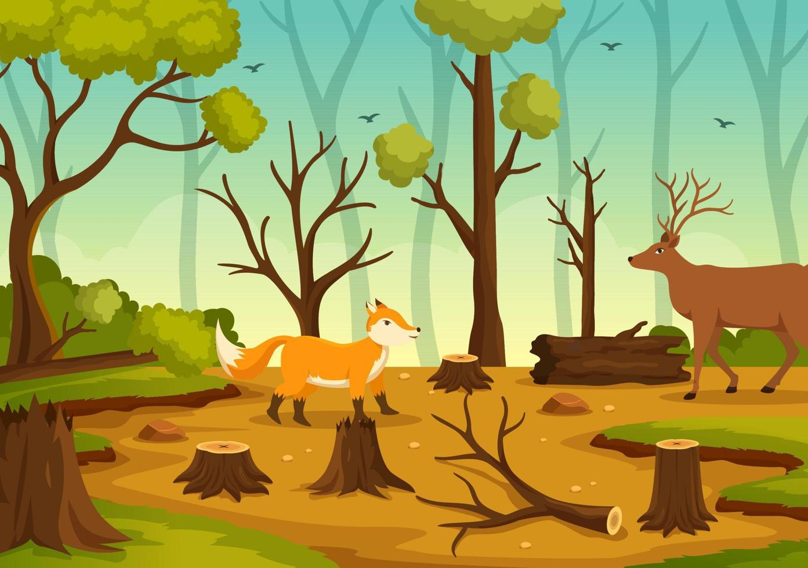

Deforestación
La deforestación es la destrucción de bosques nativos como consecuencia de la acción humana. Se produce principalmente con el objetivo de obtener insumos
para las industrias maderera y papelera, para expandir las áreas urbanas o bien para destinar terrenos a la práctica de la granaderia y la agricultura
El fenómeno de la deforestación es una de las amenazas más serias que actualmente se ciernen sobre las masas forestales del planeta. Afecta el hábitat de millones
de especies y tiene un gran impacto en el deterioro de los suelos y en procesos derivados, como la desertificación y las inundaciones.



Principales causas de la deforestación
- Agricultura y ganadería intensivas
La expansión agrícola es una de las principales causas de la deforestación. Los bosques suelen talarse para cultivar soja, maíz y palma aceitera, o para la cría
extensiva de ganado.
- Tala y explotación de madera
La tala de árboles para la producción de madera, papel y carbón vegetal es otro factor importante. Cuando se realiza de forma irresponsable o ilegal, conlleva
la pérdida de valiosos ecosistemas forestales y el agotamiento de recursos naturales esenciales para la regulación del clima.
- Expansión urbana e infraestructura
La urbanización y la construcción de carreteras, represas y zonas industriales requieren la tala de vastas extensiones de bosque.
- Incendios forestales
Tanto los incendios naturales como los provocados por el hombre destruyen grandes extensiones de bosque cada año.
- Desarrollo minero e industrial
Las industrias extractivas, como la minería y la exploración petrolera, contribuyen a la deforestación al eliminar la vegetación, contaminar los cursos de agua
y alterar los ecosistemas locales.
Como combatir la deforestación
- Consume productos que sean sostenibles
Escoge consumir determinados productos que sean amigables con el medio ambiente
- Procura por el ahorro de energía
- Reduce el consumo de papel
- Consume productos y servicios de empresas responsables
- Compra muebles de segunda en buen estado
- Considera un menor consumo de carnes y lácteos
- Utiliza más productos orgánicos
- Ayuda a plantar árboles nativos
Planta árboles en tu jardín o en espacios públicos siempre y cuando los cuides
- Participa de campañas ambientales
- Difunde información responsablemente